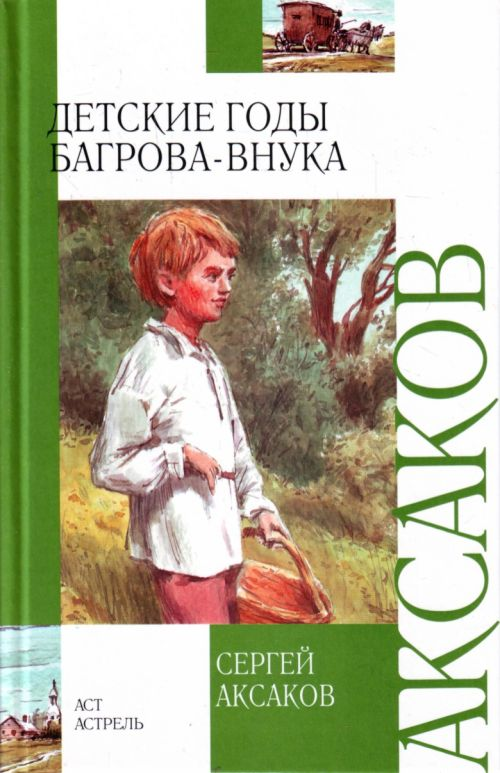
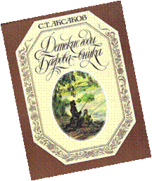
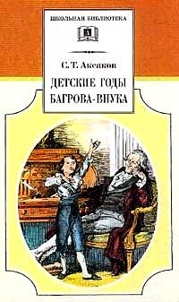
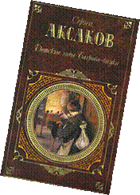

Аксаков, С. Т. Детские годы Багрова
Аксаков, С. Т. Детские годы Багрова - внука [Текст] / С. Т. Аксаков. – М.: АСТ: Астрель, 2009. – 349с. – (Внеклассное чтение).

«Есть у меня заветная дума, которая давно и день и ночь меня занимает… Я желаю написать такую книгу… какой не бывало в литературе» – так написал однажды Сергей Тимофеевич Аксаков во время создания своей знаменитой книги «Детские годы Багрова-внука». Аксаков задумал книгу, которой еще тогда не было ни в русской, ни в мировой литературе. Задача состояла в том, чтобы создать «историю ребенка» и чтобы это была книга для детей и для взрослых. Блестяще справился автор с этой задачей, книга была высоко оценена современниками и завоевала любовь читателей всех возрастов.Краткое содержание книги:
В книге описываются первые десять лет жизни ребенка (1790-е гг.), проведенные в Уфе и деревнях Оренбургской губернии.
Автор передает восприятие ребенка, для которого все внове и все одинаково важно, события не делятся на главные и второстепенные: потому в «Детских годах» фабула практически отсутствует.
Все начинается с бессвязных, но ярких воспоминаний о младенчестве и раннем детстве — человек помнит, как его отнимали от кормилицы, помнит долгую болезнь, от которой он чуть не умер, — одно солнечное утро, когда ему стало легче, странной формы бутылку рейнвейну, висюльки сосновой смолы в новом деревянном доме и т.д. Самый частый образ — дорога: путешествия считались лекарством. (Подробное описание переездов в сотни верст — к родным, в гости и т.п. — занимает большую часть «Детских годов».) Выздоравливает Сережа после того, как ему становится особенно плохо в большом путешествии и родители, принужденные остановиться в лесу, постлали ему постель в высокой траве, где он и пролежал двенадцать часов, не в силах пошевелиться, и «вдруг точно проснулся». После болезни ребенок испытывает «чувство жалости ко всему страдающему».
С каждым воспоминанием Сережи «сливается постоянное присутствие матери», которая его выходила и любила, может быть поэтому, больше других своих детей.
Последовательные воспоминания начинаются с четырехлетнего возраста. Сережа с родителями и младшей сестрой живут в Уфе. Болезнь «довела до крайней восприимчивости» нервы мальчика. По рассказам няньки, он боится мертвецов, темноты и проч. (разнообразные страхи будут мучить его и дальше). Читать его научили так рано, что он даже не помнит об этом; книга у него была только одна, он знал её наизусть и каждый день читал вслух сестре; так что когда сосед С. И. Аничков подарил ему «Детское чтение для сердца и разума» Новикова, мальчик, увлекшись книгами, был «точно как помешанный». Особенное впечатление произвели на него статьи, объясняющие гром, снег, метаморфозы насекомых и т.п.
Мать, измученная болезнью Сережи, боялась, что сама заболела чахоткой, родители собрались в Оренбург к хорошему доктору; детей же отвезли в Багрово, к родителям отца. Дорога поразила ребенка: переезд через Белую, собранная галька и окаменелости — «штуфы», большие деревья, ночевки в поле и особенно — рыбная ловля на Деме, которая сразу свела мальчика с ума не меньше чтения, огонь, добытый кремнем, и огонь лучины, родники и т.п. Любопытно все, даже то, «как налипала земля к колесам и потом отваливалась от них толстыми пластами». Отец радуется всему этому вместе с Сережей, а любимая мать, наоборот, равнодушна и даже брезглива.
Встреченные в пути люди не только новы, но и непонятны: непонятна радость родовых багровских крестьян, встретивших семью в деревне Парашине, непонятны отношения крестьян со «страшным» старостой и т.п.; ребенок видит, между прочим, жатву в жару, и это вызывает «невыразимое чувство сострадания».
Патриархальное Багрово не нравится мальчику: дом маленький и печальный, бабушка и тетушка одеты не лучше слуг в Уфе, дед суров и страшен (Сережа был свидетелем одного из его безумных припадков гнева; позже, когда дед увидел, что «маменькин сынок» любит не только мать, но и отца, их отношения с внуком внезапно и резко изменились). Детей гордой невестки, «брезговавшей» Багровом, не любят. В Багрове, до того негостеприимном, что даже кормили детей плохо, брат и сестра прожили с лишком месяц. Сережа развлекается, пугая сестру рассказами о небывалых приключениях и вслух читая ей и своему любимому «дядьке» Евсеичу. Тетушка дала мальчику «Сонник» и какой-то водевиль, сильно подействовавшие на его воображение.
После Багрова возвращение домой так подействовало на мальчика, что он, опять окруженный обшей любовью, вдруг повзрослел. В доме гостят молодые братья матери, военные, окончившие Московский университетский благородный пансион: от них Сережа узнает, что такое стихи, один из дядей рисует и учит этому Сережу, отчего кажется мальчику «высшим существом». С. И. Аничков дарит новые книги: «Анабасис» Ксенофонта и «Детскую библиотеку» Шишкова (которую автор очень хвалит).
Дяди и приятель их адъютант Волков, играя, дразнят мальчика, между прочим, за то, что он не умеет писать; Сережа обижается всерьез и однажды кидается драться; его наказывают и требуют, чтобы он просил прощенья, но мальчик считает себя правым; один в комнате, поставленный в угол, он мечтает и, наконец, заболевает от волнения и усталости. Взрослые пристыжены, и дело кончается общим примирением.
По просьбе Сережи его начинают учить писать, пригласив учителя из народного училища. Однажды, видимо, по чьему-то совету, Сережу посылают туда на урок: грубость и учеников и учителя (который был так ласков с ним дома), порка виноватых очень пугают ребенка.
Отец Сережи покупает семь тысяч десятин земли с озерами и лесами и называет её «Сергеевской пустошью», чем мальчик очень горд. Родители собираются в Сергеевку, чтобы лечить мать башкирским кумысом, весной, когда вскроется Белая. Сережа не может думать ни о чем другом и с напряжением следит за ледоходом и разливом реки.
В Сергеевке дом для господ не достроен, но веселит даже это: «Окон и дверей нет, а удочки готовы». До исхода июля Сережа, отец и дядька Евсеич удят на озере Киишки, которое мальчик считает своим собственным; Сережа впервые видит ружейную охоту и чувствует «какую-то жадность, какую-то неизвестную радость». Лето портят только гости, правда нечастые: посторонние, даже ровесники, тяготят Сережу.
После Сергеевки Уфа «опостылела». Сережу развлекает только новый подарок соседа: собрание сочинений Сумарокова и поэма «Россиада» Хераскова, которую он декламирует и рассказывает родным разные выдуманные им самим подробности о любимых персонажах. Мать смеется, а отец беспокоится: «Откуда это все у тебя берется? Ты не сделайся лгунишкой». Приходят известия о смерти Екатерины II, народ присягает Павлу Петровичу; ребенок внимательно слушает не всегда понятные ему разговоры обеспокоенных взрослых.
Приходит известие о том, что дедушка умирает, и семья сразу собирается в Багрово. Сережа боится видеть умирающего дедушку, боится, что маменька от всего этого захворает, что зимой они замерзнут в пути. В дороге мальчика мучают печальные предчувствия, и вера в предчувствия укореняется с этих пор в нем на всю жизнь.
Дедушка умирает через сутки после приезда родных, дети успевают попрощаться с ним; «все чувства» Сережи «подавлены страхом»; особенно поражают его объяснения няньки Параши, почему дед не плачет и не кричит: он парализован, «глядит во все глаза да только губами шевелит». «Я почувствовал всю бесконечность муки, о которой нельзя сказать окружающим».
Поведение багровской родни неприятно удивляет мальчика: четыре тетки воют, повалившись в ноги брату — «настоящему хозяину в доме», бабушка подчеркнуто уступает власть матери, а матери это противно. За столом все, кроме Матери, плачут и едят с большим аппетитом. И тогда же, после обеда, в угловой комнате, глядя на незамерзающий Бугуруслан, мальчик впервые понимает красоту зимней природы.
Вернувшись в Уфу, мальчик опять переживает потрясение: рожая ещё одного сына, чуть не умирает мать. Став хозяином Багрова после смерти деда, отец Сережи выходит в отставку, и семья переезжает в Багрово на постоянное житье. Сельские работы (молотьба, косьба и пр.) очень занимают Сережу; он не понимает, почему мать и маленькая сестра к этому равнодушны. Добрый мальчик пытается жалеть и утешать быстро одряхлевшую после смерти мужа бабушку, которую он до того, в сущности, не знал; но её обыкновение бить дворовых, весьма обычное в помещичьем быту, быстро отвращает от нее внука.
Родителей Сережи зовет в гости Прасковья Куролесова; отец Сережи считается её наследником и потому ни в чем не перечит этой умной и доброй, но властной и грубоватой женщине. Богатый, хотя и несколько аляповатый дом вдовы Куролесовой поначалу кажется ребенку дворцом из сказок Шахерезады. Подружившись с матерью Сережи, вдова долго не соглашается отпускать семью назад в Багрово; между тем суетливая жизнь в чужом доме, вечно наполненном гостями, утомляет Сережу, и он с нетерпением думает об уже милом ему Багрове.
Вернувшись в Багрово, Сережа впервые в жизни в деревне по-настоящему видит весну: «я […] следил за каждым шагом весны. В каждой комнате, чуть ли не в каждом окне, были у меня замечены особые предметы или места, по которым я производил свои наблюдения…» От волнения у мальчика начинается бессонница; чтобы он лучше засыпал, ключница Пелагея рассказывает ему сказки, и между прочим — «Аленький цветочек» (эта сказка помещена в приложении к «Детским годам…»).
Осенью по требованию Куролесовой Багровы гостят в Чурасове. Отец Сережи обещал бабушке вернуться к Покрову; Куролесова не отпускает гостей; в ночь на Покров отец видит страшный сон и утром получает известие о болезни бабушки. Осенняя дорога назад тяжела; переправляясь у Симбирска через Волгу, семья чуть не потонула. Бабушка умерла в самый Покров; это страшно поражает и Сережиного отца, и капризную Куролесову.
Следующей зимой Багровы собираются в Казань, помолиться тамошним чудотворцам: там никогда не был не только Сережа, но и его мать. В Казани предполагают провести не больше двух недель, но все складывается иначе: Сережу ожидает «начало важнейшего события» в его жизни (Аксакова отдадут в гимназию). Здесь кончается детство Багрова-внука и начинается отрочество.
 |
 |
 |